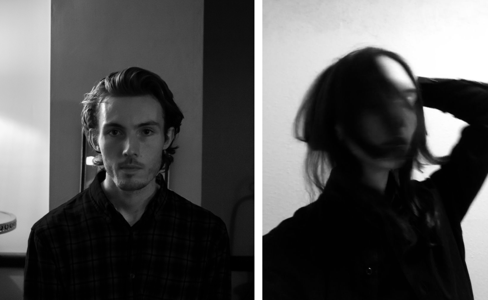

EMPATHY STUDIO is a response to the ever-developing technologies that direct us away from the powers of nature and our own introspection. The art created at EMPATHY STUDIO emulates the movement, sound and light of the natural world and aims to bring people back to a slower, more natural pace of life.
THE AIM
EMPATHY STUDIO is driven to promote environmental change. Restoring the balance between nature & technology through captivating artworks.
THE ARTISTS
Movement and spatial matter are at the core of Rebecca’s practice. From the perspective of the sensory and physical experience of being a human as well as the progression of material over time is a recurring thread in her work.
Tommy is a multidisiplinary artist with a background in Biomedical Signal Processing. He works across disciplines from sound & visual to engineering fabrication and design. He has been commissioned to create numerous thought provoking interactive experiences to encourage conversation in the environmental and mental health sectors.
CONTACT